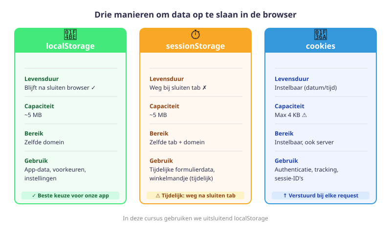
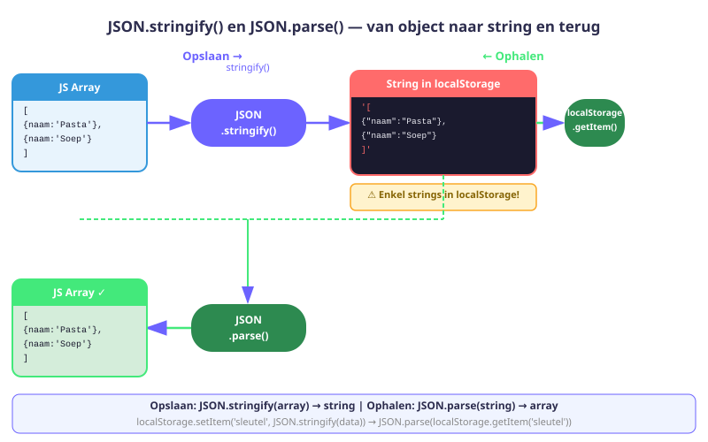
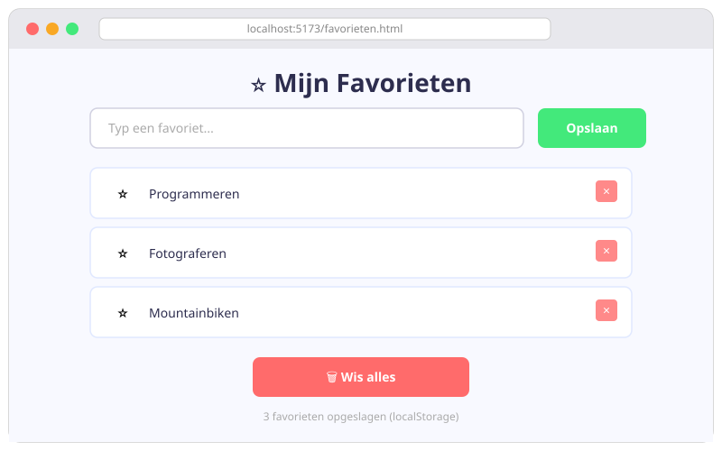

localStorage & JSON
- Uitleggen wat localStorage is en waarvoor je het gebruikt
- Data opslaan, ophalen en verwijderen via localStorage
- Het verschil kennen tussen localStorage en sessionStorage
- Arrays en objecten opslaan via
JSON.stringify() - Data terugzetten naar een array of object via
JSON.parse() - De volledige opslagcyclus toepassen in een kleine app
8.1 Wat is localStorage?
Normaal verdwijnt alle data zodra de gebruiker de pagina sluit of vernieuwt. Met localStorage kan je data bewaren in de browser — zelfs na het sluiten van het venster.
localStorage is een sleutel-waarde-opslag in de browser:
- Elke waarde heeft een unieke sleutel (string)
- De data blijft bewaard tot je ze zelf verwijdert (of de gebruiker de browserdata wist)
- Maximale opslagcapaciteit: ~5 MB per website
- Beschikbaar via het globale object
localStorage

| localStorage | sessionStorage | |
|---|---|---|
| Levensduur | Blijft bewaard (ook na sluiten) | Weg na sluiten tab |
| Capaciteit | ~5 MB | ~5 MB |
| Zichtbaar voor | Zelfde domein | Zelfde tab + domein |
8.2 Data opslaan: setItem
localStorage.setItem('sleutel', 'waarde');
// Voorbeelden
localStorage.setItem('gebruikersnaam', 'Jana');
localStorage.setItem('thema', 'donker');
localStorage.setItem('score', '42');Getallen worden automatisch naar string omgezet. localStorage.setItem('score', 42) slaat "42" op (als string, niet als getal). Houd hier rekening mee bij het ophalen!
8.3 Data ophalen: getItem
const naam = localStorage.getItem('gebruikersnaam');
console.log(naam); // "Jana"
// Als de sleutel niet bestaat → null
const onbekend = localStorage.getItem('bestaat-niet');
console.log(onbekend); // null
// Standaardwaarde instellen bij ontbrekende sleutel
const thema = localStorage.getItem('thema') || 'licht';8.4 Data verwijderen
// Één item verwijderen
localStorage.removeItem('thema');
// Alles verwijderen
localStorage.clear();
// Aantal items opvragen
console.log(localStorage.length);
// Sleutel opvragen op basis van index
console.log(localStorage.key(0));8.5 JSON.stringify() — object naar string
localStorage slaat enkel strings op. Wat als je een array of object wil opslaan?
// Probleem: arrays worden omgezet via .toString()
const favorieten = ['Pasta', 'Pizza', 'Soep'];
localStorage.setItem('favorieten', favorieten);
console.log(localStorage.getItem('favorieten'));
// "Pasta,Pizza,Soep" — FOUT: de arraystructuur gaat verlorenDe oplossing is JSON (JavaScript Object Notation):
const recepten = [
{ naam: 'Pasta', bereidingstijd: 20 },
{ naam: 'Soep', bereidingstijd: 35 },
];
const jsonString = JSON.stringify(recepten);
console.log(jsonString);
// '[{"naam":"Pasta","bereidingstijd":20},{"naam":"Soep","bereidingstijd":35}]'
localStorage.setItem('opgeslagenRecepten', jsonString);
8.6 JSON.parse() — string naar object/array
const jsonString = localStorage.getItem('opgeslagenRecepten');
const recepten = JSON.parse(jsonString);
console.log(recepten[0].naam); // "Pasta"
console.log(typeof recepten); // "object" (array)Als er nog niets is opgeslagen, geeft getItem null terug. Gebruik altijd een fallback:
const recepten = JSON.parse(localStorage.getItem('opgeslagenRecepten')) || [];8.7 Volledige opslagcyclus
Een patroon dat je in elke app zal gebruiken:
// 1. Data ophalen bij start (met fallback)
let mijnLijst = JSON.parse(localStorage.getItem('mijnLijst')) || [];
// 2. Data aanpassen
mijnLijst.push({ naam: 'Nieuw item', datum: new Date().toLocaleDateString() });
// 3. Data opslaan
localStorage.setItem('mijnLijst', JSON.stringify(mijnLijst));
// 4. Data verwijderen (bij verwijderknop)
const index = mijnLijst.findIndex(item => item.naam === 'Nieuw item');
mijnLijst.splice(index, 1);
localStorage.setItem('mijnLijst', JSON.stringify(mijnLijst));Hulpfunctie updateLS()
Maak een herbruikbare hulpfunctie om dit te vereenvoudigen:
// hulpfuncties.js
export const updateLS = (sleutel, lijst) => {
localStorage.removeItem(sleutel);
localStorage.setItem(sleutel, JSON.stringify(lijst));
};
// Gebruik in main.js:
import { updateLS } from './hulpfuncties.js';
updateLS('mijnLijst', mijnLijst);8.8 localStorage inspecteren in de browser
Open DevTools (F12) → tabblad Application → Local Storage → kies je domein.
Je ziet alle sleutels en hun waarden. Je kan ze daar ook manueel aanpassen of verwijderen — handig bij debuggen!
Als je app niet het verwachte gedrag toont, open dan DevTools en controleer de huidige waarden in Local Storage. Je kan ze ook rechtstreeks vanuit de console aanpassen: localStorage.setItem('test', '123').
Oefeningen
Maak een pagina favorieten.html met een inputveld, een "Opslaan"-knop, een lijst van favorieten en een "Wis alles"-knop.
- Bij laden van de pagina: haal de array op via
JSON.parse || []en toon de bestaande favorieten - Bij klikken op "Opslaan": voeg de ingevoerde tekst toe aan de array, sla op via
JSON.stringify, toon de bijgewerkte lijst - Bij klikken op "Wis alles": verwijder de sleutel, leeg de lijst op de pagina
- Verhinder dat lege of dubbele favorieten worden toegevoegd
// Startpunt
let favorieten = JSON.parse(localStorage.getItem('favorieten')) || [];
document.querySelector('#slaOp').addEventListener('click', () => {
const invoer = document.querySelector('#invoer').value.trim();
if (invoer) {
favorieten.push(invoer);
localStorage.setItem('favorieten', JSON.stringify(favorieten));
toonFavorieten();
}
});
function toonFavorieten() {
// Maak zelf af...
}
Bouw een pagina met een thema-toggle die de keuze onthoudt, ook na het sluiten van de browser.
- Lees bij laden de opgeslagen waarde op:
localStorage.getItem('thema') || 'licht' - Pas onmiddellijk het thema toe door een klasse op
document.bodyte zetten - Voeg een knop toe "Wissel thema" die bij klik:
- De klasse op
bodytogglet - De nieuwe waarde opslaat in localStorage
- De klasse op
- Ververs de pagina en controleer dat het thema bewaard bleef
Bouw een eenvoudig notitieboek waarbij notities bewaard blijven na het sluiten van de browser.
- Elke notitie is een object:
{ id, tekst, datum }. Sla een array van notities op in localStorage - Bij laden: haal de array op, render alle bestaande notities op de pagina
- Een invoerformulier laat de gebruiker een nieuwe notitie toevoegen. Genereer een uniek id (bv.
Date.now()) - Elke notitie heeft een "Verwijder"-knop. Bij klik: gebruik
findIndex + splice, sla de bijgewerkte array op en herrender de lijst
Huistaak
Opdracht: Persistente boodschappenlijst
Je bouwt een boodschappenlijst die bewaard blijft na het sluiten van de browser. Combineer DOM-manipulatie, events en localStorage.
Deel 1 — Basisfunctionaliteit (4 punten)
- Maak een HTML-bestand met invoerveld, "Toevoegen"-knop, lege
<ul>en een "Wis alles"-knop - Sla een array van boodschappen op in localStorage. Elk item is een object:
{ id, naam, aangevinkt } - Bij laden van de pagina: haal de array op (
JSON.parse || []) en render de lijst - Bij toevoegen: maak een nieuw item-object aan, voeg toe aan de array, sla op en herrender
Deel 2 — Interactiviteit (3 punten)
- Elke rij heeft een checkbox: aanvinken past
aangevinktaan in de array en slaat op - Elke rij heeft een "Verwijder"-knop die het item verwijdert via
findIndex + splice - De "Wis alles"-knop verwijdert de sleutel uit localStorage en herrendert de lege lijst
Deel 3 — Verfijning (3 punten)
- Toon een teller: "X van Y items aangevinkt"
- Voeg een "Wis aangevinkte items"-knop toe (filter de array en sla op)
- Verhinder dubbele boodschappen (
includesoffindop de bestaande array)
Dien de bestanden boodschappen.html en boodschappen.js in. Totaal: 10 punten
Vragenlijst
Controleer of je de leerstof van dit hoofdstuk begrijpt.
Wat is het belangrijkste verschil tussen localStorage en sessionStorage?
Welk type slaat localStorage op?
Hoe sla je een array correct op in localStorage?
Wat geeft localStorage.getItem('bestaat-niet') terug als de sleutel niet bestaat?
Welk JavaScript-object gebruik je om een JSON-string terug te zetten naar een array of object?
Wat is de correcte fallback-code om een array op te halen die mogelijk nog niet bestaat in localStorage?